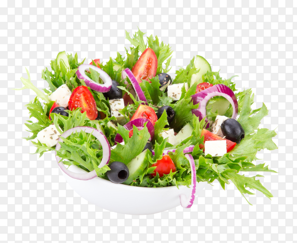

Recipe: The Outrageous Odin Salad

So outrageous, you can see the image transparency blocks!
Love leaves? Maybe the color green?
Most likely, salad's your thing.
Cheers to health, let's get into it yuh-
How To Craft:
Ingredients
- One (1) pound of spinach, unwashed (for extra nutrients)
- Handful of kale (literally just take your hand and scoop it)
- One (1) red onion, cut into ringlets (see image)
- One (1) cucumber (again,unwashed, you know why)
- One (1) tomato, chopped
- Six (6) olives (though it's recommended you skip them)
- Four (4) feta chunks, for garnish
- 1/4 cup of tap water
- Prep ingredients
- Set the tap water aside
- Throw everything into a large cauldron
- Toss, toss, toss
- Now, drizzle with the water
- Dig in, you vegetarian you